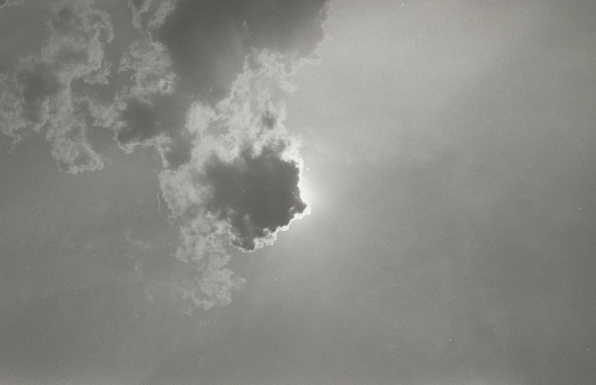

This month we lost Keith, Dick and Scott. Recently we also lost Pete, Lorna and Mark. Rest in peace, friends. These were all singular artists, working tirelessly against the grain and accepted norms to find something new to change the course of music forever. Of course we’ve lost many other significant innovators over the years, and it’s always a stark reminder of the state of pop music today.
True musical innovation traditionally occured at the fringes and took some time spiralling in towards a more mainstream aesthetic, perhaps diluting a little along way. It meant that popular music was often a diverse, open place. Radio stations would reflect this diversity to listerners who would naturally have more open minds. Today, instead of that harmonious galaxy-spiral it feels more like two distinct camps separated by a big wall, the mainstream of cookie-cutter artists on one side and the ones trying something different on the other. Any wild mutations or new ideas have this wall to scale to get themsevles heard in the other camp, in either direction. Add in a few significant obstacles like journalists, radio shows or internet algorithms that don’t aim to challenge their audience at all, and what that results is a huge mass of music fans who are stuck in their ways, unable to stray too far away from what they’re familiar with. And this division can be felt at gigs, at clubs, in record shops.
As politics around the world continues to throw batshit curveballs everyady, cultural unity is what we should look to. An hour reading the news or an hour finding some new music, and sharing with friends? No competition, really. Our resident DJ Ball Haulage’s mix for us this month reflects this state of mind, and we also have our Pat on the cover. If ever the weight gets too much, find Patrick Young (somewhere in Sri Lanka, currently) and befriend him, his spirit is exactly what we need.
We hope you find something new to challenge yourself with. Push yourself out of your comfort zone, if only for an hour or two. As always, try and buy your music if you can. Streaming services only really serve those running them. These indepedent artists and labels need our support, and it’s the least we can do for giving us so much joy.
Love and bangers x
Diet Clinic has been around for a few years as an excellent radio show on NTS, showcasing the talents of female artists and DJs from all over the world. The music here reflects the show; diverse and always excellent. It digs into fuzzy house and techno, stark new/minimal wave, eerie ambient, oblique post-punk, EBM and everything else in between. It leans acutely towards the leftfield, which is right up our street. All proceeds go to Focus E15, a campaign in East London finding homes for displaced women and their familes.
We’ve been waiting for the first KOKOROKO release for a while now. Thier Abusey Junction track was a highlight of We Out Here and you may have heard it nestled snugly into our Soothe mix. It’s included here with three new cuts, each with a heavy West-Africa-via-London vibe. A couple of sultry dancefloor stompers and a couple gorgeous lullabies—what an EP! It's been flipped and repeated so many times this month. Can’t wait for the debut LP.
Musique Pour La Danse add another retrospective of Belgium Bangers to our shelf. This is an amazing collection of previously unreleased or lost tracks. We have terse new beat, lo-fi DIY proto-techno, skeletal orchestral-synth pieces. It feels like a soundtrack to a non-existant movie, there’s an austere post-punk aesthetic to some bits and an anxious warmth to others. Prachtig!
Solange’s eagerly anticipated new record finds a 70s vibe and combines it neatly with a toolkit of trap beats. It’s some real nice deep jazzy soul and features some innovative techniques that map melody to her spoken word pieces. She effortlessly weaves through styles and genres, each time creating something heartfelt and impossibly catchy. It feels a little more raw-cut-and-paste than A Seat at the Table and the lyrics tend towards more self-reflective and inward-looking themes. The melodies nestle into your mind and make themselves more at home with each listen. It’s intimate and immersive and really shimmers; a wonderful follow-up to one of 2016’s best records.
Love it when a succinct press release nails it. Saves us a paragraph. “A hero’s quest worth of staccato synths, crack house Casios, off-brand drum machines, minimal Morricone, four-track asia, and a variety of other speculations on what the 1980s thought the future would sound like.” Features that amazing New World Music track that has just (finally) been reissued. Loving the (c)artwork, too.
Quelle Chris has quietly been making some of the best rap music around for the last few years. If you’re yet to be acquainted, this album is a v good place to start. Once you’ve absorbed this, check out Being You Is Great, I Wish I Could Be You More Often, which is also brilliant.
Not gonna lie, I bagged this immediately based solely on the cover. Happily, the music behind it stands up strong. Desert-vibed, West African folk-sounding songs mutated into wistfully nostalgic 90s techno/electronica compositions. The textures recall soundtracks to the Amiga games of my youth, the melodies and rhythm though are pure West Africa. A fantastic combo.
Let’s stay in the desert for one more, eh. Altin Gün play funky Turkish folk-psych and I don’t know how they stayed out of my psych-dub-soul-jazz playlist for so long. These cosmic wilderness jams separate my body and mind; my mind is flying, orbiting the planet at thousands of kilometers per hour, my body is down on Earth dancing free in the salt lake hinterland, shores lapped by red waters under a sickle moon. Yum yum hash hash.
Jayda G has had a storming few years. Her 12s have featured sasstastic party starters and lo-fi delicacies both, and her label Freakout Cult which she runs with DJ Fett Burger has become buy-on-sight. Ninja Tune seem to be pretty adept at signing debuts from upcoming artists at just the right time on their upward trajectory. This LP from Jayda is no exception, featuring everything that made her EPs and singles so endearing, it also shows the artist branching out into some welcome slower tempos and more complex arrangements. Can’t wait to day-party-spin the whole record!
A solid selection of chopped-up, worldly-sampled house tracks. Cosy thumps, scattering highs and some far-away-exotic melodic touches, these are really groovy. Expect to hear them out at day sessions this summer.
Playing out of time
Séance Centre is our label of the month.
Ran by Brandon and Naomi of Invisible City Editions fame, it started in 2013 in Toronto, and a modest number of releases have followed over the years. Hosting a healthy mixture of contemporary artists and resurfacing old lost gems, the aesthetic is mystical and unordinary, dedicated to telling stories that have been lost in the folds of time. The production value of each release is great; the sleeve artwork & notes are well-designed (by Alan Briand) and well-researched. Their NTS show is one of our favourites and worth a listen. Here’s a few picks from their catalog.
The release that first brought our attention to the label. My. That voice, those melodies. Beverly Glenn-Copeland made a pioneering electronic record in 1986. Lullaby-like lo-fi soul. It’s wonderfully relaxing, a coalescence of electronics and spirituality. There’s also a simplicity and near-naivety to some of the pieces that just makes your heart bloom. Such warming loveliness.
Take me on your cosmic voyage, MJ Lallo. A record of shimmering new agers, melancholic, hazy and soothing. We also loved the Star Child 12".
The most recent Séance Centre release is our favourite kind of 80s new wave synth magic. It sure is some funky dystopian boogie. Mild acid rhythms bubble gently as wisps of bleepy melodies float in and out. It’s hard to imagine this was made by humans--I can imagine a primitive robot band playing in a bar just out of shot in Robocop Detroit. Even the last track, which features the sole vocal, features an android-like lament on the scourge of humanity. Why must they only seek to destroy?
- seance-centre.com
- Séance Centre on Bandcamp
- Also checkout the Séance Centre NTS show
Another fave-label Jura Soundsystem release an EP of original tunes produced by Kevin Griffiths, who runs the label. Like everything on Jura, the origins, time periods and genres of the music are hard to pin down exactly, just by listening. We are told they’re original productions, but they could just as easily be lost gems, resurfaced. We have here a bit of new wave boogie, the stark-groove of a proto-house bomb (check out that vocal sample!), a couple of beatless trips and some electronic oddities. Great release from an amazing label.
We don’t often get the chance to combine terms like lo-fi with the genre of jazz. This self-produced tape by Chicago’s Angel Bat Dawid, on which she plays all instruments, recorded on a mobile phone, is absolutely amazing. The DIY approach adds a true intimacy not found on many jazz records; it helps to capture the spirit, in which we can feel the heartbreak and the hope, the anger and the sense of mystiscm. Soul-nourishment.
ANGEL HO’s debut follows a slew of deservedly hyped EPs and mixtapes. This is abrasive, ambitious and experimental. Exploring themes of identity and gender, there’s quite a bit going on here. Rousing club bangers, sandpaper-twisted electronics, distorted funk and sweet pop moments; it’s quite a journey. It lacks a bit of coherance (and polish, maybe?) and the occasional sung vocals are a bit uncomfortable, but overall it feels like how a pop record should be in 2019. Political, daring, brimming with interesting ideas around both production and performance. I needed a nap after my first listen but I’ve come back to it loads since.
A nice little 7" on ever-reliable Philophon. I’ve been charming around the room to these Ethio-jazz dance ditties. Shake it!
This bootleg-like live recording of tribal deep bass duo WaqWaq Kingdom really transports me to the gig. Their genre-bending of traditional Japanese music with dub, techno, dancehall and golden era Nintendo soundtracks is on display here, and the recording of it envokes a wild, hazy night, screams of delight and heavy smoke. I love live recordings like this. Free download, too!
From the press release: “a dense musical world made of uneasy ambience, shimmering distortion, subdued rhythm and propulsive melody”. Yep, that’ll do it. This is great, a soundtrack to unmanned North Sea shipping machines coming to life at night, swaying around in a silent serpantine dance on the frozen docks.
More (very welcome) remixes of Lena Platonos on Dark Entries. Contemporary Greek artists Anatolian Weapons, Pasiphae, June and Mora remix tunes from the excellent Lepidoptera LP. Meltdown.
Another banging release on Numbers, vive le Scots. Soundsystem bass bins, nearly-hands-in-air euphoria, bouncy breakbeats, introspective experimental textures. Denmark via Scotland. Atmospheric beatless meditations tie the techno tracks together nicely into a solid dance record. Double feature it with DJ Sports’ Modern Species LP from a few years ago.
One of our fave Mancunian labels present an immersive tape of engulfing underground hip hop. Another on point press release: “Anti-establishment campaigns which are morphed and screwed into a sixteen track record that spans lo-slung hip hop, doom electronics and nightmare breaks. It's the sound of a new tormented world. A guttural vision of social media decay, celebrity status and virtual simulations”. Sold.
Craigie Knowles keeps making my house louder. This time we have four massive cuts of comtemporary Drexciyan electro and I’m struggling to write this because my body wants me dancing around like a maniac. Fast, energetic, funky. Clean your house in a hurry. I’m inspired.
Exquisitely improvised haunts of thick organ and heartrending Norwegian vocals. It was made with a heavily modified, out-of-tune pump organ and it’s the sort of music I want to physically wrap me up and carry me around, so enveloping it is. Headphones lying face up on the floor moment.
The story of this record is a sad one. Exile music from Mali. It’s magnificent and heartaching. There’s some old, old soul in this and the stripped down arrangement of acoustic guitar and vocal only serves to amplify it. It yearns and hopes, maybe for home.
Emotional Rescue pulls a couple of tracks from Hawkwind’s Astounding Sounds, Amazing Music to reissue. Which is all well and good, but you may as well buy the record second hand, because it’s wonderful. But what really makes this worth its salt cubes are the two reworks by Cherrystones who gently persuades the tracks to take a more tribal form, upping the ominosity with endless loops, droning basslines and freeform synth overlays. Great record.
Shabaka Hutchings has been at the centre of many of our favourite jazz projects over the past few years. A Jupiter-tug towards anything he's involved in. The amazing Sons of Kemet record, the A.R.E Project with Hieroglyphic Being and Sarathy Korwar, and of course The Comet is Coming. The new album is way heavy, a forceful slab of cosmic joydread.
Au reste…
- Love ol’ Jeff talking about DJing technique. The master.
- That DJ Fett Burger mix for Dekmantel is well joyous.
- An interview with the makers of Kankyo Ongaku on The Outline
- Johanna Knutsson's mix for International Woman’s Day got us moving
Until next time. Look after each other x